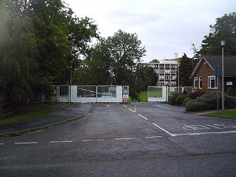
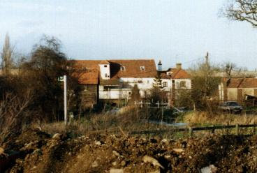
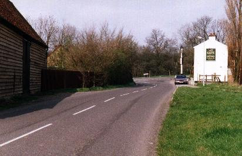
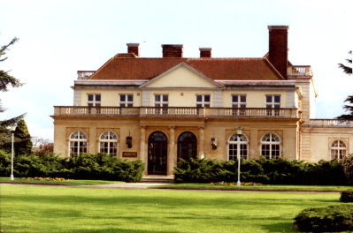

I1: The Building Research Station, Bricket Wood

I1: The Building Research
Station, Bricket Wood

THE
AVENGERS: The Positive
Negative Man (Robert Day: August 1967)
Steed visits Mankin at his laboratory. As he leaves in his Bentley he
is followed by a blue Morris 1000 van.
I2: Old Moor Mill, Smug Oak Lane, Colney Street (Ford and bridge no longer exist)

H.G.WELLS'
INVISIBLE MAN: The
Rocket (Quentin Lawrence: 1959)
Brady drives his Austin Healy 3000 past the mill and across the bridge
on the trail of the stolen rocket.
DANGER
MAN: The Sanctuary
(Charles Frend: 1959)
In the governor's Humber, Drake is driven across the river to meet
Michael Liamond at Hartington Open Prison.
THE
SAINT: The Chequered
Flag (Leslie Norman: February 1965)
Simon drives Catherine Marshall to Oscar Harvey's garage in his Volvo
after meeting her at the racing circuit.
THE
BARON: Something for a
Rainy Day (Cyril Frankel: November 1965)
Mannering's Citroen crosses the River Ver bridge, and drives towards
the mill.
THE
SAINT: The Fiction
Makers (Roy Baker: May 1966)
Simon Templar's Volvo approaches from the mill, and crosses the bridge,
driving towards Smug Oak.
THE
AVENGERS: The Positive
Negative Man (Robert Day: August 1967)
Steed (Patrick Macnee) drives his Bentley into the shallow bed river by
the bridge to dissipate the broadcast electric charge.
THE
SAINT: Legacy for the
Saint (Roy Ward Baker: Spring 1968)
The Saint's Volvo races over the bridge as he chases after Charlie and
Penny.
I3: Bricket Wood
DANGER
MAN: The Sanctuary
(Charles Frend: 1959)
John Drake (Patrick McGoohan) arrives at Glen Doon station (Bricket
Wood Station - partly demolished) posing as Michael Liamond. He meets
Mrs Crawford (Wendy Williams), after she has been greeted by Hamish the
stationmaster (Ewen MacDuff), having arrived on the same train. She
offers Drake a lift to Loch Doon when her driver Anders (Charles
Farrell) arrives. Drake and Mrs.Crawford return to the station the
following day with Crawford (Kieron Moore). After Mrs.Crawford leaves,
Mullins (Peter Murray) joins Crawford, and slugs Drake. Recovering, as
he is about to be pushed in front of an approaching express, Drake
escapes along the opposite platform, jumping across a fence (at the
corner of Leys Lane and Park Street/Bricket Wood Lane). He is pursued
by Crawford and Mullins, but both are caught by the police on the
footbridge.

THE
AVENGERS: The Positive
Negative Man (Robert Day: August 1967)
After Steed leaves Mankin's laboratory in his Bentley he is followed by
a blue Morris 1000 van along the country roads (Lye Lane and Smug Oak
Lane).

Photo: Wyn Roberts
DEPARTMENT
S: A Small War of
Nerves (Leslie Norman 1968)
After rescuing Halliday Stewart stops his car to let Jason gets out to
go to pub (The Fox and Hounds) for a drink. Stewart and Halliday stay
inside car and Halliday knocks out Stewart. Halliday runs towards
nearby Railway station and catches the London train.
(Identified by Wyn Roberts, August 2004)
I4: HKSB Training Centre
and Bricket Wood Sports Centre, Smug Oak Lane, Bricket Wood

RETURN
OF THE SAINT: Yesterday’s
Hero (Roy Ward Baker: ??)
Roy Gates (Ian Hendry) goes to talk to his son Mike (Matthew Ryan) at
his school. Simon Templar (Ian Ogilvy) and (Annette Andre) talk to
Armstrong, the headmaster (Reginald Jessup), a prefect (Rupert Graves)
and some of the pupils.
I5: Handley Page
Factory/Radlett Aerodrome (closed 1971 and re-developed)
UFO: Identified (Gerry
Anderson: May 1969)
Colonel Straker (Ed Bishop) and General Henderson (Grant Taylor) arrive
at a British air base and are met by the Minister and his escort.
(Identified by Fanderson, 1997)
THE
PROTECTORS: The First
Circle (Don Chaffey: 1973)
John Hunter (Ed Bishop) goes on a shooting spree in a derelict airbase.
Harry Rule (Robert Vaughn) is met by a security guard (Frederick
Bennet) who sends him to the senior policeman at the scene, Slade (John
Collin). Slade and another policeman (George Roubicek) have been unable
to stop Hunter peacefully. Harry Rule attempts to rescue the situation
without anyone else getting hurt spurred on by pleas from Karen (Sally
Bazely), Hunter’s wife.
THE
SWEENEY: The Placer
(Ted Childs: 1974)
Working underccover as a lorry driver Det. Insp. Jack Regan
(John Thaw) is chatting to a hitchhiker, Fran (Susan Tracy), in his
cab about his load of razor blades (they drive north along the runway).
Later Regan meets up with Det. Sgt. George Carter (Dennis Waterman) on
a stretch of motorway as he has some information about Fran. Posing as
a lift mechanic Sgt Carter does some snooping around the transport
company looking for the stolen goods, he finds what he needs. When the
lorry leaves, Carter follows in his van (the President furniture
factory occupied part of the old aircraft factory).
(spotted by Charles Regan, April, 2012)
Film:
THE IRON MAIDEN (1963)
ASSASSIN (1973)
STARDUST (1974)
SUPERMAN IV: The Quest
for Peace (1987)
Television:
BUDGIE: Title Sequence (1971)
I6: King's Langley Station
THE
SAINT: The Talented
Husband (Michael Truman: June 1962)
An express train speeds out of Cookham Station with John Clarron on
board. Later Mrs Jafferty leaves on the same train.
(Spotted by Harper, May 2005)
I7: Napsbury Station (demolished)

current photo required
GIDEON’S
WAY: Boy With Gun
(Jeremy Summers: May 1965)
A shocked Chris Kirk (Howard Knight) walks along the railway tracks
(Napsbury Signal Box) with his father’s gun.
(Identified by Victor Hall, August 2009)
I8: How Wood Station, How Wood, Hertfordshire (demolished)

current photo required
DANGER
MAN: The Sanctuary
(Charles Frend: 1959)
Irish Republicans derail a train and shoot a policeman before making
their escape (Hyde Lane crossing, where How Wood Station is today).
(Identified by Alan Field)
I9: Moor Mills Gravel Pit,
Smug Oak Lane, Colney Street (redeveloped)
(Identified by Andrew Pixley, June 2016)
THE BARON: Something for a Rainy Day
(Cyril Frankel: November 1965)
Mark Seldon (Michael Gwynn) and Charlotte Russell (Lois Maxwell) arrive
at the quarry, near St.Justine, where Seldon hid the Aztec gold. Max
Holder (Patrick Allen) and Lucas (Derek Newark) arrive soon after and
begin a search for Seldon. John Mannering (Steve Forest), Cordelia
Winfield (Sue Lloyd) and Anne Seldon (Ann Lynn) arrive just as Holder
and Lucas take the treasure from Seldon and drive away in a white
Jaguar. Leaving Anne with her father, Forest and Cordelia give chase in
their Citroen.
UFO: Court Martial (Ron
Appleton: October 1969)
Colonel Paul Foster (Michael Billington) escapes from the Harlington
Straker Studio complex to some nearby waste ground. S.H.A.D.O.
security guards are not far behind him. Despite Foster’s best
attempts to escape his pursuers, he is cornered and shot.
Television:
TIMESLIP: The Year of the Burn Up (1970)